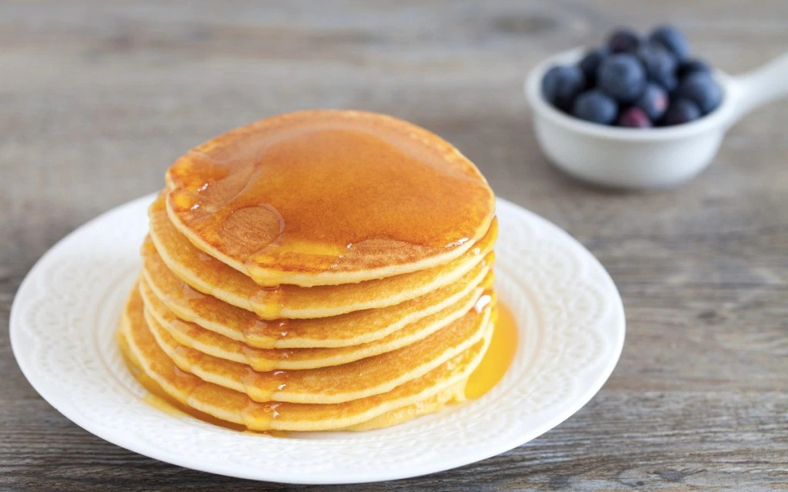

Pancakes

Description
What better way to start the day than eating some yummy pancakes? Choose your favourite topping and take your frying-pan out!
Not only are these pancakes easy to make but they are also tasty and healthy! With this recipe you can make some delicious pancakes in less than 15 minutes! Let's check the procedure together!
Ingredients (for 15 pancakes)
- 220 g egg white
- 130 g flour
- 100 g greek yogurt
- 20 g brown sugar
- 8 g baking powder
Steps
- Use a whisk to whip the egg white in a bowl until they have a foamy consistency
- Add the brown sugar keep beating the egg white
- Add the greek yogurt in the bowl and stir the ingredients
- Mix the flour with the baking powder and slowly add the mixture to the bowl
- Heat a nonstick frying-pan and add just a bit of oil
- When the pan is heated you can add the pancake batter
- When you notice bubbles on the surface of the pancake, flip the pancake using a spatula
- Keep cooking until the pancake browned on the other side
- Pile the pancakes on a plate and garnish with your favourite topping